7
Using I2C
The I2C (pronounced “I squared C”) interface bus is a standard for connecting microcontrollers and peripherals together. I2C is sometimes referred to as Two Wire Interface (TWI). All the Arduino boards have at least one I2C interface to which you can attach a wide range of peripherals. Some examples are shown in Figure 7-1.
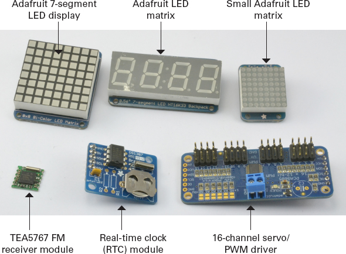
Figure 7-1 A collection of I2C devices
The three devices on the top row of Figure 7-1 are all display modules from Adafruit. On the bottom row, starting on the left, is a TEA5767 FM receiver module. You can find these modules on eBay and elsewhere for a few dollars. The TEA5767 provides you with a full FM receiver module that you can tune to a certain frequency by sending it I2C commands. In the center is a real-time clock (RTC) module, including an I2C chip and crystal oscillator that maintains a fairly accurate time and date. Once you have set the date and time over I2C, you can read the time and date back over I2C whenever you need it. This module also includes a long-life lithium button cell that allows it to keep time, even when the module has no external power. Finally, on the right, is a 16-channel servo/PWM driver that can give you 16 extra analog outputs from your Arduino.
The I2C standard is defined as a “bus” standard because its use is not limited to connecting one component directly to another. Say you have a display connected to a microcontroller; using the same two bus pins, you can connect a whole set of “slave” devices to a “master” device. The Arduino acts as the “master,” and each of the “slaves” has a unique address that identifies the device on the bus.
Figure 7-2 shows a possible arrangement of two I2C components attached to an Arduino, a real-time clock (RTC), and a display module.
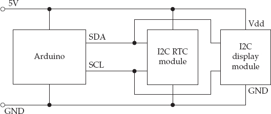
Figure 7-2 An Arduino controlling two I2C devices
You can also use I2C to connect two Arduinos together so they can exchange data. In this case, one of the Arduinos will be configured to act as a “master” and one as a “slave.”

I2C Hardware
Electrically, I2C interfaces connection lines from a microcontroller or peripheral can act as both a digital output or digital input (also called tri-state). In tri-state mode, the connection lines are neither HIGH nor LOW, but are, instead, a floating value. The outputs are also open-collector, which means that they require a pull-up resistor. These resistors should be 4.7 kΩ in value, and there should be just one pair for the whole I2C bus, pulling up to either 3.3V or 5V, depending on the voltage at which you want the bus to operate. If some devices on the bus use different voltages, you need to use a level converter. Bidirectional level converter modules suitable for I2C are available, such as the BSS138 device from Adafruit: www.adafruit.com/products/757.
The various Arduino boards allocate different pins to I2C. For example, the Uno uses pins A4 and A5 as SDA and SCL, respectively, whereas the Leonardo uses pins D2 and D3. (More on SDA and SCL in the next section.) On both boards, the SDA and SCL pins are available on the socket header next to the AREF connection (Figure 7-3).
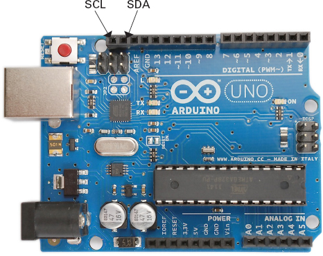
Figure 7-3 I2C connections on an Arduino Uno
Table 7-1 indicates the location of I2C pins on the common Arduino boards.
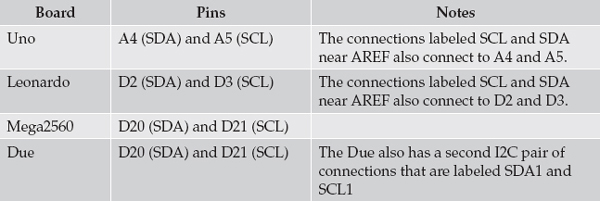
Table 7-1 I2C Connections on Arduino Boards
The I2C Protocol
I2C uses two wires to transmit and receive data (hence, the alternative name of Two Wire Interface). These two lines are called the Serial Clock Line (SCL) and the Serial Data Line (SDA). Figure 7-4 shows the timing diagram for this signal.
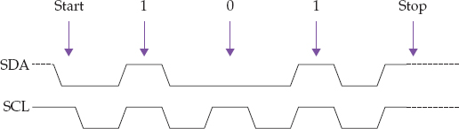
Figure 7-4 Timing diagram for I2C
The master supplies the SCL clock, and when there is data to be transmitted, the sender (master or slave) takes the SDA line out of tri-state (digital input mode) and sends data as logic highs or lows in time with the clock signal. When transmission is complete, the clock can stop and the SDA pin is returned to tri-state.
The Wire Library
You could, of course, generate these pulses yourself by bit banging—that is, turning digital outputs on and off in your code. To make life easier for us, however, the Arduino software includes a library called Wire that handles all the timing complexity, so we can just send and receive bytes of data.
To use the Wire library, you first need to include it using the following command:
Initializing I2C
In most situations, an Arduino is the “master” in any I2C bus. To initialize an Arduino as the master, use the begin command in your setup function, as shown here:
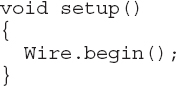
Note that because the Arduino is the master in this arrangement, you don’t need to specify an address. If the Arduino were being initialized as a slave, then you would need to specify an address, 0 to 127, as its parameter to uniquely identify it on the I2C bus.
Master Sending Data
To send data to an I2C device, start by using the beginTransmission function and specifying the address of the I2C device on the bus that you wish to send data to:
You can either send data to an I2C device one byte at a time, or you can send a char array, as shown in these two examples:
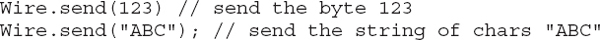
Finally, at the end of the transmission, use the endTransmission function:
Master Receiving Data
For a master to receive data from a slave, it must first request the number of bytes it requires using the requestFrom function:
The first argument to this function is the address of the slave from which the master wants to receive data, and the second argument is the number of bytes that the master is expecting to receive back. The slave can return less than this, so the available function is used to determine both if data has arrived and the number of bytes received. The following example (taken from the Wire example sketches) shows the master reading all available data from the slave and echoing it to the Serial Monitor:
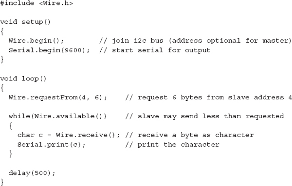
The Wire library will buffer incoming I2C data.
I2C Examples
Any I2C device should have an accompanying datasheet that specifies the messages that it expects to use. Sometimes you will need to use that datasheet to build your own messages to send from the Arduino and to interpret the messages that come back. You’ll often find, however, that when an I2C device is commonly used with an Arduino, then someone has written a library that wraps the I2C messages in nice easy-to-use functions. In fact, if there isn’t a library and you work out how to use the device, then the socially minded thing to do is to release your library to the world and earn yourself some open source karma.
Even if no fully fledged library is available, you can often find useful code snippets for the device on the Internet.
TEA5767 FM Radio
The first I2C example does not use a library. It deals with raw messages to interface an Arduino with a TEA5767 module. These modules are available at a very low cost on the Internet and are easy to connect to an Arduino to use as an Arduino-controlled FM receiver.
The tricky part is that the connections on these devices are set at an extremely fine pitch, so you generally need to make or buy some kind of adapter that allows you to use them with breadboard or jumper wires.
Figure 7-5 shows how this module can be wired to an Arduino.
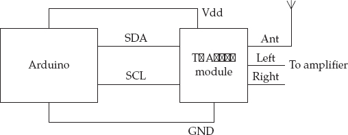
Figure 7-5 Wiring a TEA5767 module to an Arduino Uno using I2C
You can find the full datasheet for the TEA5767 here: www.sparkfun.com/datasheets/Wireless/General/TEA5767.pdf. The datasheet contains a lot of technical information about the chip, but if you scroll through the document, you’ll find a section detailing the messages that it expects to receive. The datasheet specifies that the TEA5767 expects to receive messages of five bytes. The example code shown next is a fully working example that will tune the frequency once at startup. In practice, you need some other mechanism, such as push buttons and an LCD display, to set the frequency.
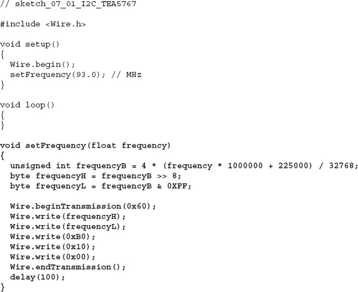
The code we’re interested in is all in the setFrequency function. This function takes a float as a parameter. This value is the frequency in MHz. So if you’re going to build this for real, you might want to look up the frequency of a good local radio station with a strong signal and put the value in the call to setFrequency in the setup function.
To convert a float frequency in MHz into a two-byte value that can be sent as part of the five-byte message, you need to do some math. The math is contained in the code:
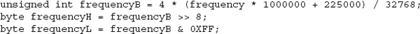
The >> command shifts bits to the right, so using >> 8 shifts the most significant 8 bits into the least significant 8 bit positions. The & operator provides a bitwise and operation, which has the effect of masking off the top 8 bits so only the bottom 8 bits remain. For more information on this kind of bit manipulation, see Chapter 9.
The remainder of the setFrequency function begins transmission of the I2C message to the slave with address 0x60, which is fixed for the TEA5767 chip. It then sends each of the 5 bytes, starting with the 2 frequency bytes.
If you read through the datasheet, you’ll discover many other things you can accomplish with different messages, such as scanning, muting one or more channels, and setting the mode to mono or stereo.
In the Appendix, we’ll revisit this example, creating an Arduino library so using the TEA5767 can be even simpler.
Arduino-to-Arduino Communication
This second example uses two Arduinos, one acting as the I2C master and one as the slave. The master will send messages to the slave, which will, in turn, echo them to the Serial Monitor, so we can see that the communication is working.
The connections for this setup are shown in Figure 7-6. Note that the TEA5767 module has built-in I2C pull-up resistors, but this is not the case when connecting two Arduinos, so you’ll need to provide your own 4.7 kΩ resistors, as shown in Figure 7-6.
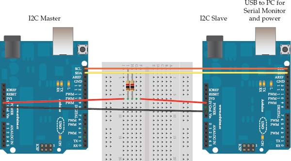
Figure 7-6 Connecting two Arduinos using I2C
We need to program each of the two Arduinos with a different sketch. Both sketches are provided as examples in the Wire library. Program the master Arduino with File | Example | Wire | master_writer, and the slave Arduino with File | Example | Wire | slave_receiver.
Once you’ve programmed both Arduinos, leave the slave Arduino connected to your computer; you need to see the output from this Arduino in the Serial Monitor, and it will also supply power to the master Arduino.
Start with the sketch on the master Arduino:
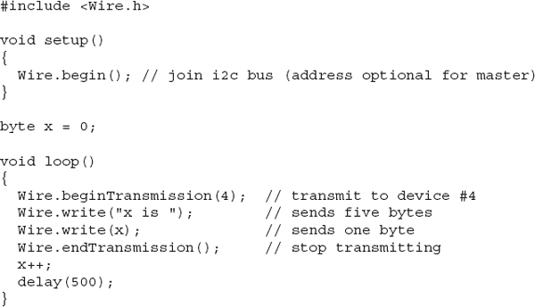
This code generates messages of the form “x is 1” where 1 is a number that is incremented every half second. This message is then sent to the I2C slave device with the ID of 4, as specified in beginTransmission.
The slave sketch’s job is to receive the messages coming from the master and echo them on the Serial Monitor:
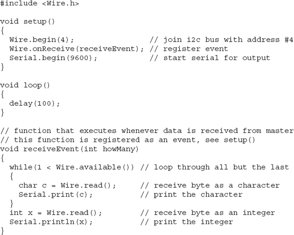
The first thing to notice is that this time the Wire.begin function has a parameter of 4. This parameter specifies the I2C address of the slave, which is 4. It must match the address that the master sends the message to.
TIP You could connect many slave Arduinos to the same two-wire bus as long as each has a different I2C address.
The sketch for the slave differs from that of the master because it uses interrupts to respond to the master when a message comes in. This is accomplished using the onReceive function, which is invoked like an interrupt service routine (see Chapter 3). Place this in setup so the user-written function receiveEvent is invoked whenever a message comes in.
The receiveEvent function is expected to have a single parameter, which indicates the number of bytes ready to be read. In this case, this number is ignored. The while loop first reads all the available characters and echoes each character in turn. It then reads the single byte number on the end of the message and prints that to the Serial Monitor. Using println rather than write ensures that the value of the byte is displayed rather than its character value (Figure 7-7).
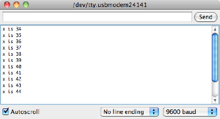
Figure 7-7 Serial Monitor output for Arduino to Arduino over I2C
LED Backpack Boards
Another common range of I2C devices are those used for displays. Of these, the range of backpack boards for matrix and seven-segment LED displays from Adafruit are typical. They contain an LED display mounted on a circuit board that also has an I2C LED controller chip on it. This setup reduces the normally large number of Arduino I/O pins required for controlling an LED display with just the two I2C SDA and SCL pins.
These devices (top row of Figure 7-1) are used with a pair of libraries that provide a comprehensive set of functions for displaying graphics and text on Adafruit’s range of LED backpacks. You can find out more about these colorful and interesting devices here: www.adafruit.com/products/902.
Once you’ve installed the libraries, all the I2C communication is hidden away, and you can just use high-level commands as illustrated by the following code taken from the libraries’ example sketches:

DS1307 Real-Time Clock
Another common I2C device is the DS1307 RTC chip. This chip also has a well-used and reliable Arduino library to simplify it and hide the actual I2C messages. The library is called RTClib and can be downloaded from here: https://github.com/adafruit/RTClib.
The fragments of code are, again, taken from the examples supplied with the library.
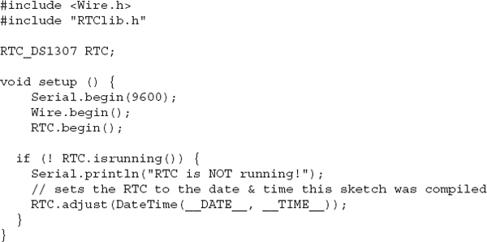
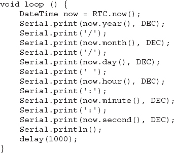
If you want to see the actual I2C code, then you can open the library files and look at how they work. For example, you’ll find the RTClib library in the files RTClib.h and RTClib.cpp. These files are in the folder libraries/RTClib.
For example, you can find the function definition for now in RTClib.cpp:
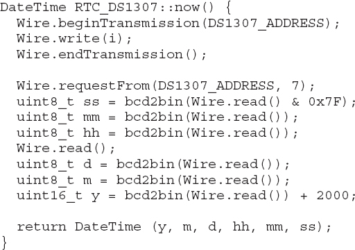
The values that are read over I2C are in binary-coded decimal (BCD), which must be converted into bytes using the bcd2bin function in the library.
BCD splits a byte into two 4-bit nibbles (yes, really). Each nibble represents one digit of a two-digit decimal number. So the number 37 is represented in a BCD byte as 0011 0111. The first four bits being decimal 3 and the second four bits 7.
Summary
In this chapter, you have learned about I2C and how to use it with an Arduino to communicate with peripherals and other Arduinos.
In the next chapter, we examine another type of serial bus interface that is used to communicate with peripherals. This interface, called 1-wire, is not as widely used as I2C, but is used in the popular DS18B20 temperature sensor.